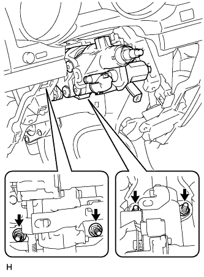

РУЛЕВАЯ КОЛОНКА В СБОРЕ (для моделей с наклонной телескопической рулевой колонкой с электроприводом) > СНЯТИЕ |
| 1. РАСПОЛОЖИТЕ ПЕРЕДНИЕ КОЛЕСА СТРОГО ПРЯМО |
| 2. ОТСОЕДИНИТЕ ПРОВОД ОТ ОТРИЦАТЕЛЬНОГО ВЫВОДА АККУМУЛЯТОРНОЙ БАТАРЕИ |
Отключите функцию автоматического отвода/возврата, изменив значение настраиваемого параметра (Нажмите здесь).
Включите зажигание (IG). С помощью переключателя наклона и телескопического изменения высоты полностью выдвиньте и опустите рулевую колонку.
Выключите зажигание и отсоедините провод от отрицательного (-) вывода аккумуляторной батареи.
| 3. СНИМИТЕ ЛЕВОЕ ПЕРЕДНЕЕ КОЛЕСО |
| 4. СНИМИТЕ РУЛЕВОЕ КОЛЕСО В СБОРЕ |
| 5. СНИМИТЕ НИЖНИЙ КОЖУХ РУЛЕВОЙ КОЛОНКИ |
Выверните 3 винта.
Освободите 2 захвата и снимите нижний кожух рулевой колонки.
| 6. СНИМИТЕ ВЕРХНИЙ КОЖУХ РУЛЕВОЙ КОЛОНКИ |
Освободите 4 фиксатора.
Освободите захват и снимите верхний кожух рулевой колонки.
| 7. СНИМИТЕ ПЕРЕКЛЮЧАТЕЛЬ НАКЛОНА И ТЕЛЕСКОПИЧЕСКОГО ИЗМЕНЕНИЯ ВЫСОТЫ |
 |
Отсоедините разъем.
Освободите захват и вытяните переключатель наклона и телескопического изменения высоты.
| 8. СНИМИТЕ КОМБИНИРОВАННЫЙ ПЕРЕКЛЮЧАТЕЛЬ В СБОРЕ С ВИТЫМ КАБЕЛЕМ |
Отсоедините разъемы от комбинированного переключателя с витым кабелем.
 |
Зафиксируйте зажим плоскогубцами и поднимите захват с помощью отвертки. Затем снимите комбинированный переключатель в сборе с витым кабелем с рулевой колонки в сборе.
| 9. СНИМИТЕ НИЖНЮЮ ОТДЕЛОЧНУЮ НАКЛАДКУ ПАНЕЛИ ПРИБОРОВ В СБОРЕ (для моделей без подушки безопасности для защиты коленей) |
| 10. СНИМИТЕ ПОДУШКУ БЕЗОПАСНОСТИ № 1 ДЛЯ ЗАЩИТЫ КОЛЕНЕЙ В СБОРЕ (для моделей с подушкой безопасности для защиты коленей) |
| 11. СНИМИТЕ РУЛЕВУЮ КОЛОНКУ В СБОРЕ |
Расцепите захваты и снимите защиту жгута проводов и жгут проводов.
Нанесите метки на привод рулевого управления и рулевую колонку.
| *a | Метка |
Выверните болт.
|  |
Отверните 4 гайки и снимите рулевую колонку и стопор вала рулевого управления.
| 12. СНИМИТЕ УПЛОТНЕНИЕ МЕЖДУ ФАРТУКОМ ЛЕВОГО ПЕРЕДНЕГО КРЫЛА И РАМОЙ № 1 |
 |
Для моделей с KDSS:
Освободите 7 фиксаторов и снимите уплотнение фартука крыла.
 |
Для моделей без KDSS:
Освободите 5 фиксаторов и снимите уплотнение фартука крыла.
| 13. ОТСОЕДИНИТЕ ПРОМЕЖУТОЧНЫЙ ВАЛ РУЛЕВОГО УПРАВЛЕНИЯ В СБОРЕ |
Нанесите метки на промежуточный вал рулевого управления и промежуточный вал рулевого управления № 2.
| *a | Метка |
Выверните болт, а затем вытяните промежуточный вал внутрь автомобиля.
| 14. СНИМИТЕ КОЖУХ ВЫХОДНОГО ОТВЕРСТИЯ РУЛЕВОЙ КОЛОНКИ № 1 |
 |
Выверните 4 болта и снимите кожух выходного отверстия рулевой колонки с автомобиля.
| 15. ОТСОЕДИНИТЕ ПРОМЕЖУТОЧНЫЙ ВАЛ № 2 РУЛЕВОГО УПРАВЛЕНИЯ В СБОРЕ |
Нанесите метки на промежуточный вал № 2 рулевого управления и механизм рулевого управления с усилителем.
| *a | Метка |
Выверните болт и отсоедините промежуточный вал № 2 рулевого управления от механизма рулевого управления с усилителем.